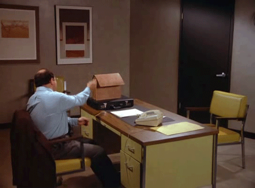
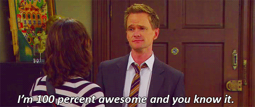

Teacher’s Pet or Genius?
It’s that time of year again. Actually, it’s any time really. You’re applying for a job and the employer need two letters of recommendation to even consider you. It doesn’t matter if you think you’re qualified for the job–your employer wants to know how other people view you. CM’s got the lowdown on how to score a coveted recommendation letter.
MAKE YOUR TA YOUR BFF
I know what you’re thinking. Why would you get a letter of recommendation from the TA? There are a lot of professors that just teach a course, and nothing else. Most of the time, their TAs do the majority of the work. If this is the case, then get to know your TA because they’ll be the ones doing the grading, so they’ll be able to talk about you from an academic standpoint. Aim for a grad student, preferably getting her PhD. This basically means she’s becoming a professor, anyway. Chances are she’s also taught several courses and is clearly good at writing.
DON’T BE JUST ANOTHER FACE IN THE CROWD
Now that you and your TA are on a first name basis, get to know your professor. Make sure he knows who you are and not just as “that one kid in my class.” If he can’t recognize you at the local Target, pick someone else. I wouldn’t recommend someone who teaches those really big 300-student lecture classes. Honestly, you’re just another blank face to them. Unless you consistently go to class, sit in the front, always raise your hand to ask and answer questions, the professor won’t know you. If you think he could really write you a great letter of recommendation, then by all means, go for it; otherwise, stick with someone who teaches your 12-person lecture.
GO TO OFFICE HOURS

Professors love when you visit them during their office hours (as do TAs, hint hint). I know so many professors that actually get upset when nobody comes to their office hours. Usually they’re just sitting there waiting for someone to come in and say Hi. OK, maybe not, but they really do appreciate it when students come in to talk to them. Some professors make it mandatory, but even if it’s not, you should still go. This shows your initiative and willingness to learn. Remember, they’ve dedicated that time for you.
DON’T ASK YOUR BUSIEST PROFESSOR
In theory, every professor should care about their students and be willing to help them. That’s why they’re in this field in the first place, right? Wrong, sadly. There are going to be professors that don’t consider teaching their first priority. Usually they’re working on their thesis or research projects and trying to get tenure. They’ve gotten a grant from the university to fund their research and all they need to do is teach a class part-time. Try to avoid these types of professors. You want to pick someone that will make you a priority.
DON’T WAIT UNTIL THE LAST MINUTE
Once you have a feeling of which professors and TAs will be willing to give you a letter of recommendation, let them know ahead of time—the earlier the better. Don’t wait until the end of the semester; there will probably be a line out the door with other students asking for a recommendation as well. They might agree to write one for everyone, but even if they do, your letter might not be very original. If a professor really wants to write you a good one, then he won’t want to make it generic and boring; he’ll want to cater it to your appeals and strengths to make it personal. That takes time. Make sure you give them that time so they can write about all of your great qualities.
DON’T WORRY ABOUT BEING PERFECT

Just remember–you don’t have to be the perfect student to get a good letter of recommendation from a professor. There’s so much more to you than just your grades, and you should let your professor know that. College is all about meeting people and learning while you’re at it. (Maybe it’s the other way around…) Employers want to see your ability to communicate and how people in respected fields view you. This is your letter—they want to hear about you. And why shouldn’t they? You’re awesome.